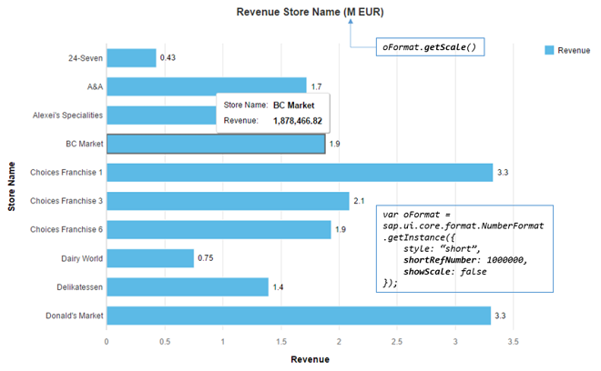

sap.ui.core.format.NumberFormat class can be used to parse a
string representing a number (float or integer) into a JavaScript number
and vice versa (also known as format).NumberFormat uses the parameters defined for the current locale. These
parameters can be overwritten on each instance by setting the format options.
There are five types of formatters defined in NumberFormat:
Integer formatter: formats and parses only the integer digits; decimal digits are ignored
Float formatter: formats and parses both integer and decimal digits.
Percent formatter: formats the number into a string with percentage sign. It validates the number whether it contains the right percentage sign in its parser.
Currency formatter: formats the number by using the parameters defined for the given currency code. Either currency symbol, currency code, or none of both can be included in the final formatted string. It parses the given string into an array which contains both the currency number and currency code.
Unit formatter: formats the number by using the parameters defined for the given unit.
The instantiation of sap.ui.core.format.NumberFormat is done by calling a getter defined on NumberFormat (and
not by using the
constructor).
// "NumberFormat" required from module "sap/ui/core/format/NumberFormat" var oIntegerFormat = NumberFormat.getIntegerInstance(); var oFloatFormat = NumberFormat.getFloatInstance(); var oPercentFormat = NumberFormat.getPercentInstance(); var oCurrencyFormat = NumberFormat.getCurrencyInstance();
All parameters have their default value defined in the
current locale. Therefore, if no parameter is given when instantiating the formatter
instance, it fetches the parameters from the current locale. The samples here assume
that the current locale is en-US.
All parameters can be overwritten by giving a format option object in the getter of the formatter. There are a number of parameters defined for the four types of formatters. Most of them are shared among the types, and the rest are specifically defined for a certain kind of formatter.
minIntegerDigits: minimal number of non-fractional digits. If there are fewer integer digits in the number than the value
defined here, "0"s are prepended to the final result.
maxIntegerDigits: maximum number of non-fractional digits. If there are more digits in the number than the value defined
here, all integer digits in the final result are replaced by "?".
minFractionDigits: minimal number of fractional digits. If there are fewer decimal digits in the number than the value
defined here, "0"s are appended to the final result.
maxFractionDigits: maximum number of fractional digits. If there are more decimal digits in the number than the value
defined here, the surplus digits are discarded, and the least significant digit is calculated via the given
roundingMode parameter.
decimals: number of decimal digits in the final result. The same result is achieved by setting both
minFractionDigits and maxFractionDigits to this value.
precision: maximum number of digits in the formatted representation of a number; if the precision is less
than the overall length of the number, the fractional part is truncated by rounding. The integer part can have more digits
than defined by the precision; it can only be affected by rounding when this option is used.
For integer format types, this option is only considered if formatting leads to a representation of a number with decimal
places, e.g. if the option style: "short" is set.
Example 1:
1234.56782"1,235" (rounding is applied)
The integer value of the number is 1234, the decimal value is 5678, and the
precision defines the number of digits to express the value of the number as 2. As the integer
part must remain unaffected by this constraint, the decimals are removed in the formatted result. In addition,
rounding is applied.
Example 2:
1234.56786"1,234.57" (rounding is applied)
The integer value of the number is 1234, the decimal value is 5678, and the
precision defines the number of digits to express the value of the number as 6. Thus, only the
first 2 decimal places are retained and rounding is again applied.
Example 3 (integer type):
1235676short"123.567K"
The integer value of the number is 123567. Applying the short format to this
number results in a representation with decimal places. The K stands for "kilo", which is to be interpreted as 3
powers of ten.
If the precision would now be reduced to, e.g. 2, the formatted result would now
become 124K as the decimal places would get truncated and the integer part would be affected by
rounding.
shortDecimals: number of decimal digits in the shortifed number when the style parameter is set to
"short" or "long". If this isn't set, the parameter decimal is used
instead.
var oFormatOptions = {
minIntegerDigits: 3,
maxIntegerDigits: 5,
minFractionDigits: 2,
maxFractionDigits: 4
};
// "NumberFormat" required from module "sap/ui/core/format/NumberFormat"
var oFloatFormat = NumberFormat.getFloatInstance(oFormatOptions);
oFloatFormat.format(1.1); // returns "001.10"
oFloatFormat.format(1234.567); // returns "1,234.567"
oFloatFormat.format(123456.56789); // returns "??,???.5679"var oFormatOptions = {
style: "short",
decimals: 1,
shortDecimals: 2
};
// "NumberFormat" required from module "sap/ui/core/format/NumberFormat"
var oFloatFormat = NumberFormat.getFloatInstance(oFormatOptions);
oFloatFormat.format(1234.56); // returns "1.23K" (shortified number takes the shortDecimals parameter)
oFloatFormat.format(123.456); // returns "123.5" (non-shortified number takes the decimals parameter)decimalSeparator defines the symbol used for the decimal point.
groupingBaseSize only used if your locale uses a specific group size for the first group (e.g. Indian
locale) and you don't want to use this standard.
groupingEnabled defines whether the integer digits are put into groups which are separated by the
groupingSeparator parameter.
groupingSeparator defines the separator of grouping.
groupingSize only used if you don't want the locale-specific grouping, for example, 3 digits for de or
en.
minusSign
plusSign
You can use compact format to format a number using a given scale. For example, 1000000 may be formatted under en-US locale as 1 Million.
To format a number in compact format, set the style option to either "short" or "long".
These styles control which version of scale name is used. For example, 1000000 is formatted as 1M with
"short" and 1 Million with "long".
The scale can be selected automatically based on the given number, or you can set it explicitly by using shortRefNumber. You
can set this option with a number which is then used for calculating the scaling factor for formatting all given numbers to this
formatter.
To hide the scaling formatter from the formatted number and only be shown once on the screen, you can use option showScale. In
order to get the scaling factor name of the number set to shortRefNumber under the current locale,
getScale can be used.
To control the starting point of numbers which should be displayed in compact format, shortLimit can be used.
In the following chart, all numbers both on the chart and the axis should be formatted using the same scaling factor. The scaling factor
should only appear in the chart title and be hidden from the formatted number. In order to achieve this, the option
shortRefNumber is set to 1000000, and showScale is set to
false. The corresponding scaling factor name is returned by calling the getScale
method.

emptyString defines what empty string
("") is parsed as and what is formatted as
emptyString. The allowed values are only
NaN, null or 0.
Default setting is NaN.
pattern: a pattern which follows the CLDR syntax. The
number is then formatted according to the given pattern.
roundingMode: defines a rounding behavior for discarding
the digits after the maximum decimal digits defined by
maxFractionDigits or decimals.
Rounding will only be applied, if the formatting value is of type
number.
|
Number |
|
|
|
|
|
|
|
|
|---|---|---|---|---|---|---|---|---|
|
2.21 |
2.2 |
2.3 |
2.2 |
2.3 |
2.2 |
2.2 |
2.2 |
2.2 |
|
2.25 |
2.2 |
2.3 |
2.2 |
2.3 |
2.2 |
2.3 |
2.2 |
2.3 |
|
2.29 |
2.2 |
2.3 |
2.2 |
2.3 |
2.3. |
2.3 |
2.3 |
2.3 |
|
-2.21 |
-2.3 |
-2.2 |
-2.2 |
-2.2 |
-2.2 |
-2.2 |
-2.2 |
-2.2 |
|
-2.25 |
-2.3 |
-2.2 |
-2.2 |
-2.3 |
-2.3 |
-2.2 |
-2.2 |
-2.3 |
|
-2.29 |
-2.3 |
-2.2 |
-2.2 |
-2.3 |
-2.3 |
-2.3 |
-2.3 |
-2.3 |
You can parse a formatted number, which can contain locale-dependent grouping separators,
a locale-dependent decimal separator or a percentage sign, into a number object using
sap.ui.core.format.NumberFormat. Such a number string may not be
correctly parsed by using parseInt or parseFloat
in JavaScript.
// "NumberFormat" required from module "sap/ui/core/format/NumberFormat"
var oFloatFormat = NumberFormat.getFloatInstance();
oFloatFormat.parse("1,234.567"); // returns 1234.567
oFloatFormat.parse("12.34%"); // returns 0.1234When users switch between multiple UIs, websites or editors, they may encounter different characters being used as decimal and grouping separators. This can lead to incorrect numerical input if the user assumes a locale different from the one actually used by the UI. For example, in English locales the grouping separator is a comma (",") and the decimal separator is a dot ("."), whereas in German locales it is the other way around.
To prevent an accidental mix-up of decimal and grouping separator in the user input, we have introduced a stricter parsing logic of
sap.ui.core.format.NumberFormat by using decimal separator validation with an optional
strict grouping validation. Instead of ignoring the grouping separators when parsing user input, several
checks are carried out on the grouping to identify potential input errors.
If not otherwise mentioned, the examples below are based on the US locale standard settings (en-US):
// "NumberFormat" required from module "sap/ui/core/format/NumberFormat"
var oOptions = {
decimalSeparator : ".",
groupingSeparator : ",",
groupingSize : 3
};
var oFloatFormat = NumberFormat.getFloatInstance(oOptions);The following user input is considered to be potentially wrong and therefore invalid:
There is no decimal separator and only one grouping separator, which occurs at an unexpected position.
oFloatFormat.parse("1,2"); // NaN (before: 12)
oFloatFormat.parse("1,23"); // NaN (before: 123)
oFloatFormat.parse("1,2345"); // NaN (before: 12345)Assumption: As the position of the grouping separator does not match the locale-specific convention, the user might have intended to use a decimal separator but used a separator from a different locale by mistake.
There is no decimal separator, only a single grouping separator is present, and at least one additional grouping separator is missing, including the least significant (lowest) grouping separator.
oFloatFormat.parse("1234,567891"); // NaN (before: 1234567891)Assumption: Any user aware of the right grouping separator would probably have added the missing grouping separator(s) as well. It is therefore likely that the grouping separator was confused with the decimal separator.
Regarding the return value, a number with invalid grouping is treated in the same way as user input that cannot be parsed:
Unit and currency instances return null.
Float, percent, and integer instances return NaN.
oFloatFormat.parse("1,2"); // NaN
NumberFormat.getCurrencyInstance(oOptions).parse("1,2 EUR"); // nullThe following user input is considered to be valid:
There is no decimal separator, only the least significant (lowest) grouping separator is present, and at least one additional grouping separator is missing.
oFloatFormat.parse("1234,567"); // 1234567
While the presence of a single grouping separator in combination with the absence of additional grouping separator(s) hints at a potential confusion with the decimal separator, the input is nevertheless accepted in this case. The reason for this is that UI5 validation would otherwise contradict the UI behavior implemented in classic SAP GUI applications.
For an option to bring UI5 validation even closer to the behavior of the classic SAP GUI, see Strict Grouping Validation below.
At least 2 grouping separators are present in the input.
oFloatFormat.parse("1234,567,892"); // 1234567892Assumption: As more than one grouping separator was used and as decimal separators must only occur once, a mix-up of the separators can be ruled out.
One decimal separator and at least one grouping separator are present in correct sequential order.
oFloatFormat.parse("1234,567.89"); // 1234567.89Assumption: As both separators are used in the expected order, a wrong usage is not likely.
There are no decimal or grouping separators (trivial as no misinterpretation possible).
oFloatFormat.parse("1234567891"); // 1234567891For an even stricter parsing of number strings, you have the option of additionally enforcing strict grouping validation
by setting the strictGroupingValidation format option to true. For more information, see the
API
Reference.
While grouping separators are then still treated as optional and can be wholly or partially absent from the input, all grouping separators that are present must be at a correct position according to the user's locale. Numbers with wrongly placed grouping separators are refused in all cases. This brings UI5 validation closer to the UI behavior implemented in classic SAP GUI applications.
Example:
// "NumberFormat" required from module "sap/ui/core/format/NumberFormat"
var oOptions = {
decimalSeparator : ".",
groupingSeparator : ",",
groupingSize : 3,
strictGroupingValidation: true
};
var oFloatFormat = NumberFormat.getFloatInstance(oOptions);
oFloatFormat.parse("1,2,3"); // NaN (before: 123)